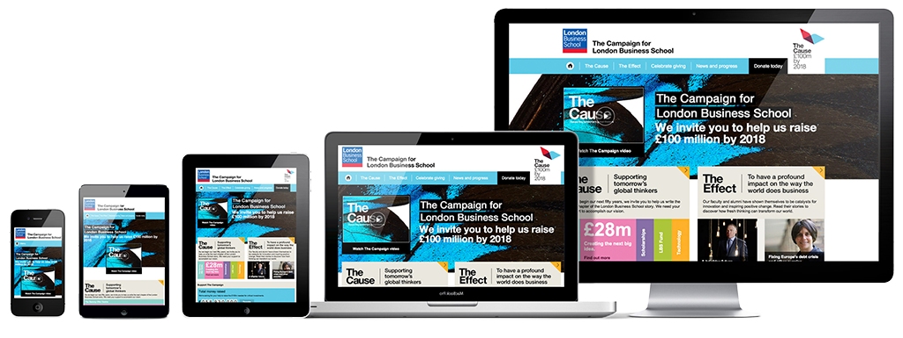

What does "responsive" mean?
Responsive web design (RWD) is an approach to web design aimed at crafting sites to provide an optimal viewing experience—easy reading and navigation with a minimum of resizing, panning, and scrolling—across a wide range of devices (from desktop computer monitors to mobile phones).
A site designed with RWD adapts the layout to the viewing environment by using fluid, proportion-based grids, flexible images, and CSS3 media queries, an extension of the @media rule, in the following ways:
- The fluid grid concept calls for page element sizing to be in relative units like percentages, rather than absolute units like pixels or points.
- Flexible images are also sized in relative units, so as to prevent them from displaying outside their containing element.
- Media queries allow the page to use different CSS style rules based on characteristics of the device the site is being displayed on, most commonly the width of the browser.